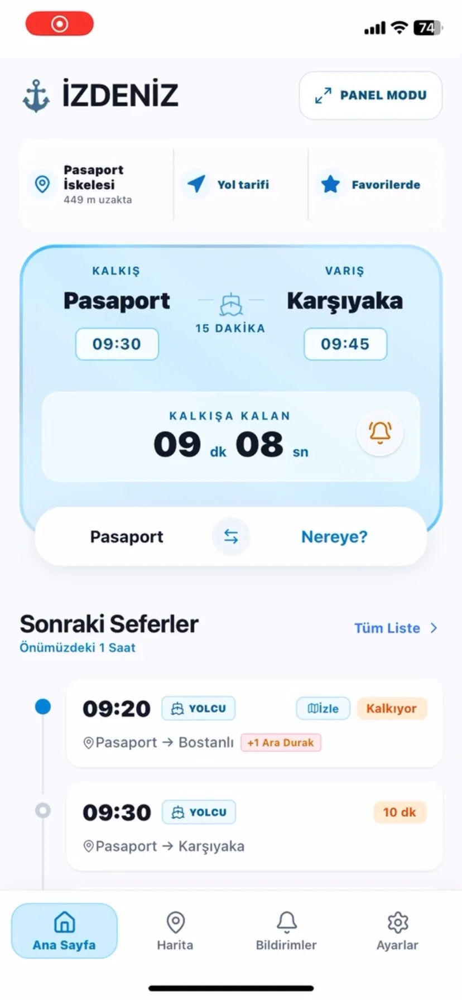
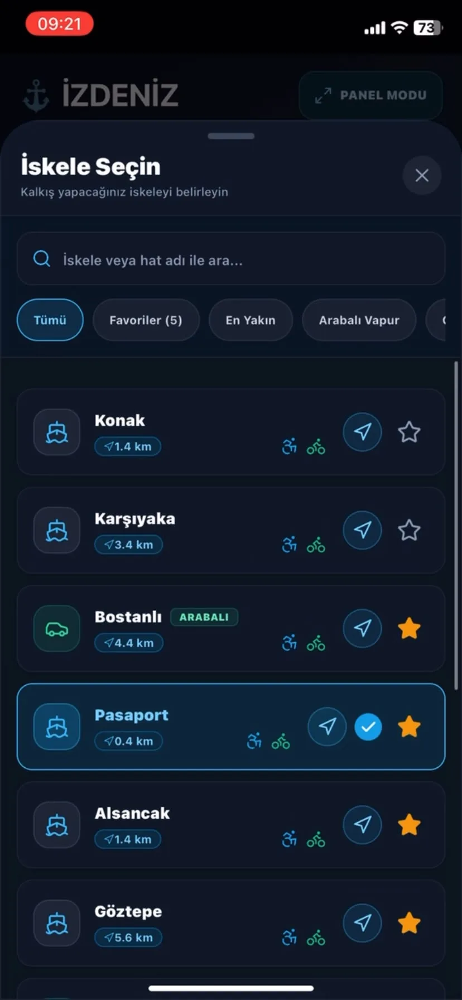
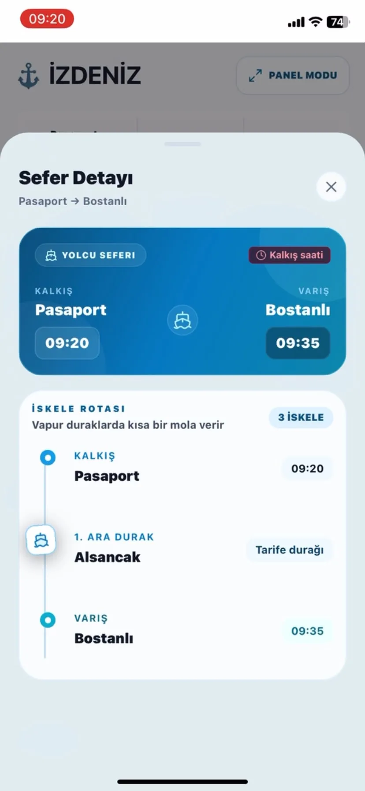
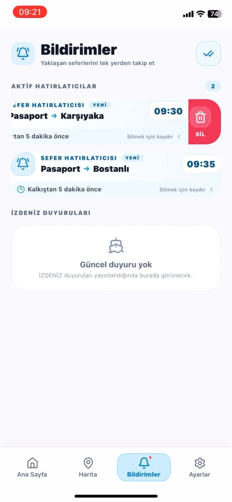

Dağınık bilgi
İskele, yön, aktarma ve saat bilgisini ayrı ayrı aramak günlük kullanımda gereksiz bilişsel yük oluşturuyor.
İZDENİZ açık servisindeki sefer verilerini; canlı geri sayım, iskele odaklı akış ve tarife tabanlı 3D körfez haritasıyla birleştiren React Native uygulaması.

Temel ürün sorusu basitti: “Bulunduğum iskeleden bir sonraki uygun vapur ne zaman kalkıyor?” Deneyimi bu tek kararı hızlandıracak şekilde kurdum.
İskele, yön, aktarma ve saat bilgisini ayrı ayrı aramak günlük kullanımda gereksiz bilişsel yük oluşturuyor.
“09:30” tek başına yeterli değil. Kullanıcı kalkışa kaç dakika ve saniye kaldığını anında görmek istiyor.
Sefer listesi; rota, ara durak, yol tarifi ve hatırlatıcı gibi yolculuk kararlarını tek akışta birleştirmeli.
Önce sıradaki seferi göster. Ayrıntıyı ihtiyaç anında aç. Haritayı gerçek konum iddiası taşımadan, tarife tabanlı tahmini hareket olarak anlat.
Kategoriyi veya küçük ekranları seçerek ürün akışını inceleyebilirsin. Büyük görsele dokunmak tam ekran görünümü açar.
Seçili iskele, rota, kalkış saati ve saniyelik geri sayım aynı karar alanında buluşuyor.
Akış, ilk açılıştan hareket anına kadar her ekranda tek bir ana karar bırakacak şekilde sadeleştirildi.
Yakındaki veya favori iskeleyi sabitle.
Yönü ve kalan süreyi saniyesiyle takip et.
Ara durakları ve tahmini varışı aç.
Yaklaşan kalkışları tek yerde yönet.



Mimari; ağ dalgalanmalarında kullanılabilir kalmak, 3D sahneyi sekmeler arasında korumak ve veri kaynağının sınırlarını kullanıcıya doğru anlatmak üzerine kuruldu.
Haritadaki vapur hareketi tarifeden hesaplanıyor. Ürün metni bunu GPS/AIS verisi gibi göstermiyor; güven sınırı açıkça korunuyor.
Harita ilk ziyarette oluşturuluyor, sekme değişimlerinde bellekte tutuluyor; uygulama arka plana geçtiğinde render ve sorgular duraklatılıyor.
Güncel önbellek yeniden kullanılıyor; eski ama geçerli tarife ağ yanıtı beklenirken gösterilebiliyor ve başarısız yenileme mevcut veriyi silmiyor.
Sekiz iç körfez iskelesi, yolcu ve arabalı vapur filtreleri, rota katmanı, yakınlaştırma ve 2D/3D kamera modu aynı sahnede çalışıyor.
Proje deposunda veri katmanı, harita motoru, önbellek, bildirimler ve kritik kullanıcı akışları için otomatik kontroller bulunuyor.
quality/checksBu proje; mobil arayüz, erişilebilir etkileşim, harita görselleştirme, API dayanıklılığı ve otomatik testleri aynı kullanıcı problemi etrafında birleştirebildiğimi gösteriyor.
Diğer projelere dön →